According to the above-mentioned information, it is clear that the main objective of this research project, is
to analyze traffic violation problems, and for that reason we downloaded thousands of dataset recordings that
represents the traffic violations happened in the USA in some specific years. So, we are going to go through some
factors like the causes and the results of these violations.
To check what are the main reasons for these violations and how can we decrease them in the society. So, let first show some rows
of the given data after the preparation process done in the last question:
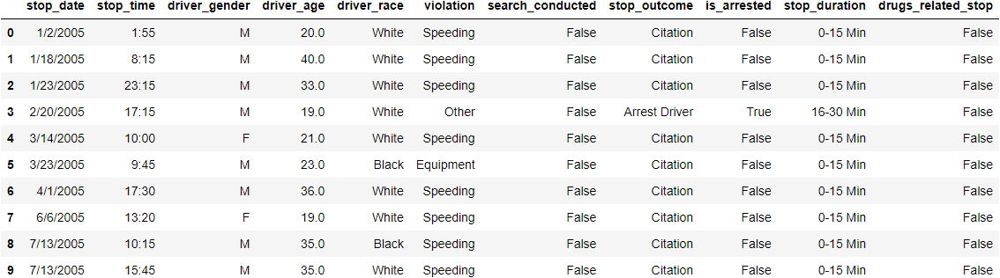
So, it is obvious in the given 11 columns, one can see that each of these columns, has either a reason, a result or
a relative relation to the occurred accident. So, let’s try to categorize these columns in a more hierarchical form.
Briefly, we can see direct cause of the happened accidents in the violation and drugs_related_stop columns,
and a direct result of the accident, in the stop_outcome, is_arrested columns, while the other given columns
give us some other important related information like the time of the accident in the stop_date and stop_time columns.
and a driver related information in the driver_gender, driver_race and driver_age columns, and finally the stopping
duration of the accident in the stop_duration column.
4-Data Analysis:
Data analysis is the process of collecting, modeling, and analyzing data to extract insights that support decision-making.
There are several methods and techniques to perform analysis depending on the industry and the aim of the investigation.
Analytic procedures allow a researcher to make inductive inferences from data, according to Shamoo and Resnik (2003).
So according to Karin Kelley ,
data analysis can be considered as gathering all the information, processing it, exploring the data, and using it to find patterns
and other insights. which what we are going to do on our problem. But before starting analysis operation,
one is going first to divide this process into some steps.
 Generally data analysis can be divided into some steps. According to Lauren Erdelyi , there’s a straightforward five-step process that can be followed to extract insights from data, during our analysis process,
which are: stating the problem, data collection, data cleaning, analyzing the data and interpreting the results.
Since the first 2 steps already given in our research, as we have the problem which is the traffic violation in the USA , and the data already generated,
so what we are going to do is cleaning , analysing and interpreting the data.
Let's begin with cleaning the given data.
Generally data analysis can be divided into some steps. According to Lauren Erdelyi , there’s a straightforward five-step process that can be followed to extract insights from data, during our analysis process,
which are: stating the problem, data collection, data cleaning, analyzing the data and interpreting the results.
Since the first 2 steps already given in our research, as we have the problem which is the traffic violation in the USA , and the data already generated,
so what we are going to do is cleaning , analysing and interpreting the data.
Let's begin with cleaning the given data.
Data Cleaning:
Careful data preparation is an essential part of statistical analysis. This step assumes the data have been
collected, coded and recorded.This can include, Removing major errors, duplicates, and outliers
or Removing unwanted data points , Bringing structure to the data and Filling in major gaps.
As mentioned in question 2, our data has some redundancy and dirtiness that have to be removed.So, we will end up with removing some redundant columns such as
the country_name column has 100% null data points, beside driver_age_raw, violation_raw columns as
it is clear that deleting such columns won't affect on the bias or our analysis, since they are just like a copy of other 2 columns which are,
driver_age and violation columns.
And regarding the country_name and search_type columns, it is obvious that they are almost empty, so one adds these columns also to the deleted columns.
besides, the search_type column which has about 90% null data points, so we delete that one.
and also, one noticed that the last row has almost null values, so we added it to the deleted cells.
Finally, we can see that almost 8 columns contain like 6% null data points, So, now we will remove the Nan data points in the columns,
in which, our estimation may affect the bias. like: driver_gender, driver_race, violation, stop_outcome, is_arrested,
stop_duration and we will estimate the age column using mean method and remove row_age since we don't need it.
After implementing all of the above cleaning processes using Openrefine software. Now , we are ready to start analysing this clean dataset
and answer the the above questions, during our analysis.
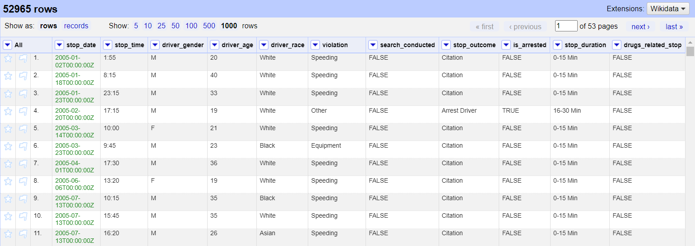
Data analyzing:
Now comes the most interesting part in this research project which is the analysis part. There is a half-dozen popular
types of data analysis available today, commonly employed in the worlds of technology and business,
such as: Diagnostic Analysis, Predictive Analysis, Prescriptive Analysis, Statistical Analysis, and many more.
And each one of these models has a role to play in analysing process; depending on the situation.
But, the one that we are going to use here is the Statistical Analysis.
Statistical Analysis
shows “What happen?” by using past data in the form of dashboards. Statistical
Analysis includes collection, Analysis, interpretation, presentation, and modeling of data. It analyses a set of data or a sample of data.
And it can be divided into 2 categories , descriptive analysis and inferential analysis. The first works with either complete or selections of
summarized numerical data. It illustrates means and deviations in continuous data and percentages and frequencies in categorical data.
while the latter works with samples derived from complete data and in this type of Analysis, one can find different
conclusions from the same data by selecting different samples.
So, regarding our situation , one is going to choose the first type which is the descriptive analysis.And now comes the time to answer the
questions that we asked using our analysis.
Do the driver gender is involved in the accident occurrence?
To answer this question, let see first the number of males and females involved in the given dataset. One can notice
that the number of males is about 36564 which represents around 73.75%, while the number of the females is around 13016 with only 26.25%.
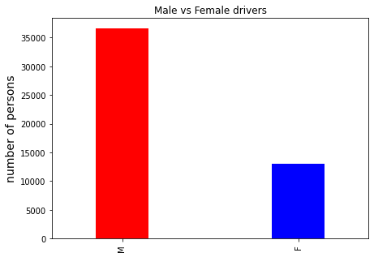
So we can see that the males do more accidents than females, and this is the first conclusion that we got from our analysis.
what is the relation between the driver age and the violation?
Here, another question raised, to check if the driver's age has anything to do with the violation,
but before answering this question, we have to see the variation of the driver's age over the data set,
which can be visualized by the following graph:
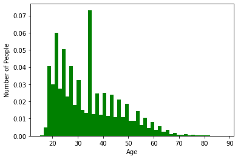
So, from the above graph and using some analytic tools,one can see that the maximum number
of drivers who violate the rules were 34 years old with about 6.83% of the total drivers. And we can notice also that most of the violators are
young people whose age ranged between 20 and 35 years old.
So we can conclude that the driver maturity has a great effect on his awareness of law, but we can't generalize
that rule since we can see that the 34-year old driver violate the rule even more than younger people with a great differnece
if we compare them to the guys in their twenties. But, overall we can see that The curve slopes with
the increasing of the driver life
Do the driver age has anything to do with the type of the violation?
After nowing the relation between the driver's age the violation occurance , anthor interesting question can be asked,
which see the relation between the driver's age and the type of the violation itself like speeding, moving violation and so on.
But, during answering this question , anthor question arose, which is what is the most type of the violation happened ?
So, lets take a look at the following graph:
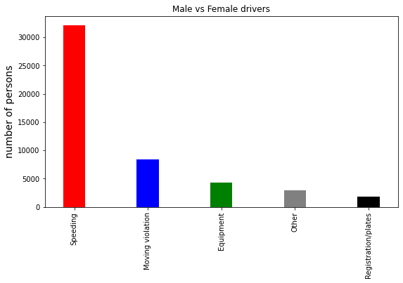
From the above graph, we can see that Exceeding the maximum speed limit was the main reason of the accidents,
which represents around 64.82% of the total number of violations. So, lets show the relation between
the driver age and the violation:
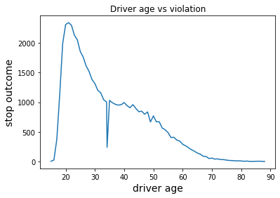
IIt is obvious that young people violate the rules more than the older. But according to the violation types
distribution graph we saw that speeding was the most common violation type, so let see if the age
has a relation with exceeding the speed limit:
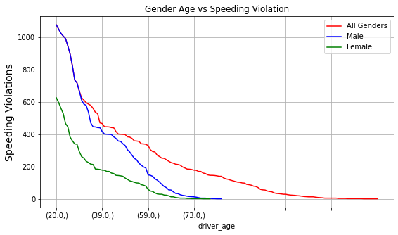
It is also clear that young people are most of the time reckless and break the traffic rules.
How the violation type affects on the stop outcome?
After seeing the different violation types, let’s take a look on their effect on the accident outcome
such as citation, arrest passenger, arrest driver, warning and others. So, let’s take a look at the following
accident results representation graph:
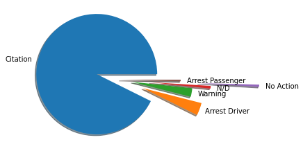
From the above graph, it is clear that citation is the most common result between the stop outcome results,
with about 92.63 % of the total stop outcome results.So, the overall relations between the violation and the
stop outcome can be clearly shown in the following pivot table:
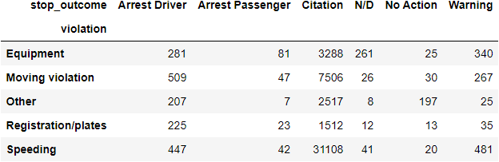
So, from the above table, one can conclude that exceeding the speed limit is the main cause of vehicle accidents and most of
the time it leads to death.
When are most of the violations occur?
Let see if the timing of the accident has anything to do with its occurrence, but before showing that,
one needs to see when most of the accidents occur to see if there is a fluctuation in the timing of
these violations or is there some specific time that most of the accidents occur at, by investigating the following graph:
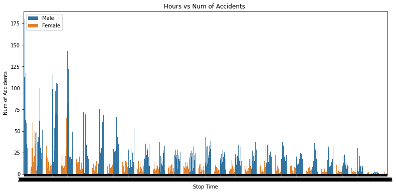
So, from the above graph shown, one can see that most of the accidents occur at 11 o'clock with about 0.48%.
So, generally , the accidents are almost equally distributed over the 24 hours and increase a little bit in
the morning. and this may have relations with the heavy traffic in the morning.
Is there any linkage between the driver race and the violation?
By logic , driver ethnicity has nothing to do with rules violation,
but the data analysis here, has different opinion, so let see first the pivot graph that relates both the driver_race and
the violation.
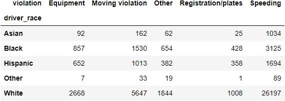
So, according to the above shown table, one can see that most of the accidents has been done by the white drivers ,
but this may reflect the society ethnicity in the USA, so this result should be related to the white people ration
in the USA before using it in our results.
Did the drug play a role in violation occurance?
Now, let see if the drugs have any effect on the traffic violation. Although it is a naive and obvious question,
as by logic , it has a strong correlation with accidents occurrence , but the results were shocking,
as shown in the following graph:
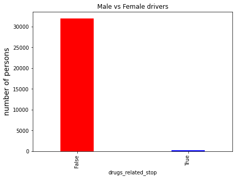
From the above shown graph it can be hardly seen how the drugs affect on the violation,
with about 0.45 % of the total accidents occurred. Before giving a conclusion of
this data analysis process, one should illustrate that there are too many relations that can be studied
to give a hidden correlation, which makes data analysis field a subjective field, as its results mainly
depend on the analyst insight.
Finally, one can give a conclusion to the overall analysis done on the given dataset, that younger people are the most prone
to accidents, and also exceeding the speed limit was the main reason of traffic violation and leads most of the time
to death. Also, one can observe that Male drivers are more likely than women to break the rules. The question remains,
are the results that we obtained reliable and did the variables that we neglected during the data analysis process,
like stop_duration for instance, had a more effective role than we imagined?